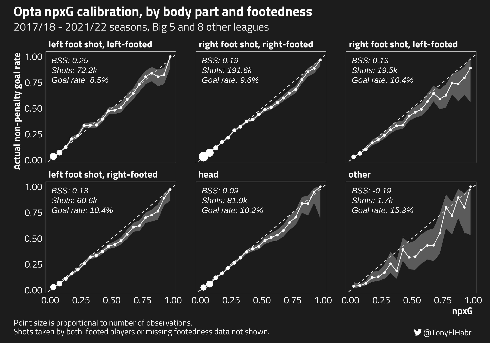
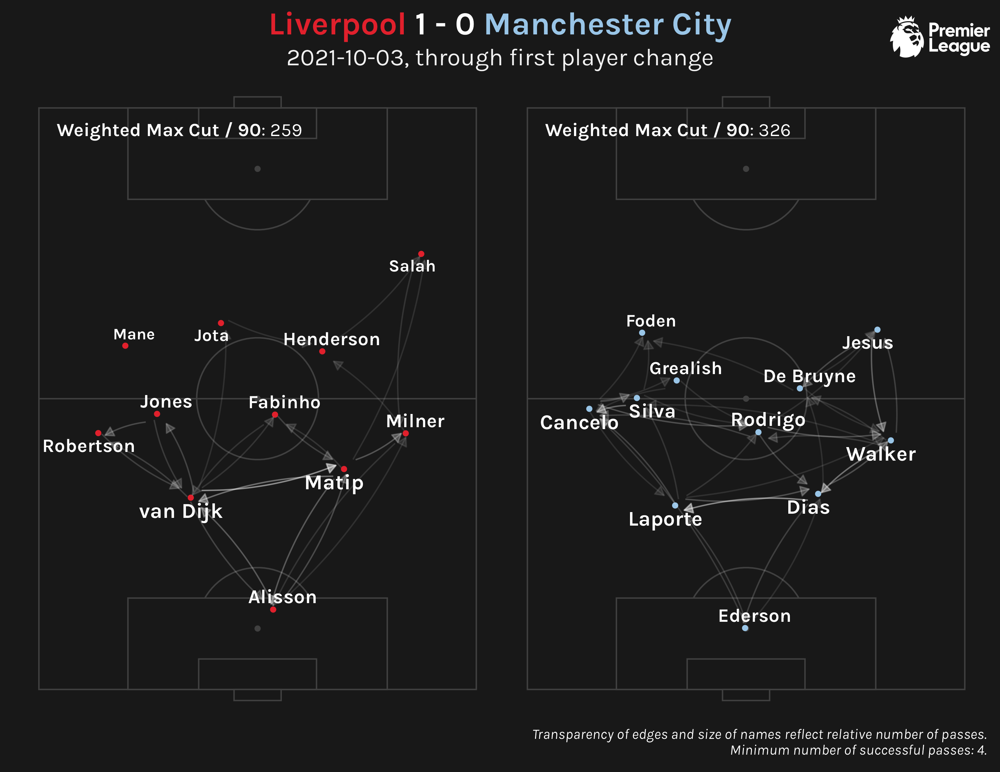
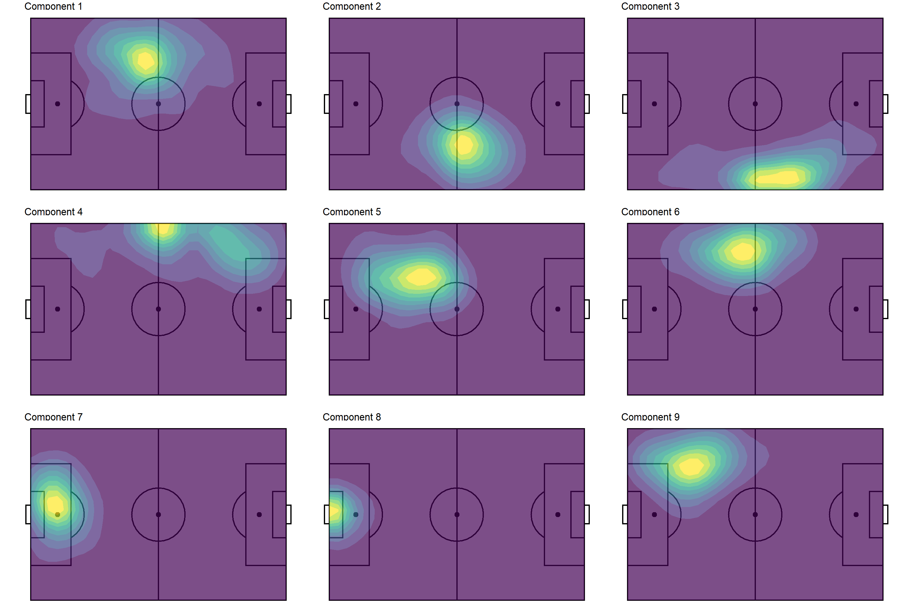
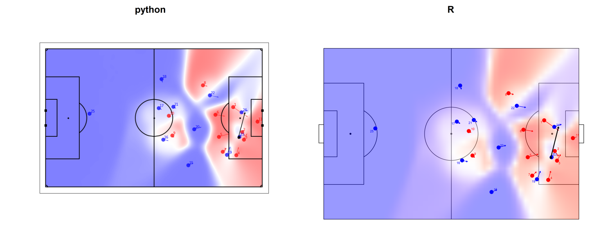

Evaluating Opta’s xG model performance with Brier skill score (BSS) and calibration curves
Evaluating how we can use match outcome probabilites for season-long insights
Calculating and comparing expected points from different expected goals sources

Quantifying soccer pass networks with weighted maximum cuts
An Alternative to the Classic Approach to Dimension Reduction + Clustering
With Atomic VAEP
Brute Force Programming Go Brrr

With data.table, reticulate, and spatstat

With S3 Classes and vctrs